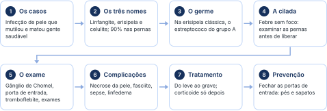
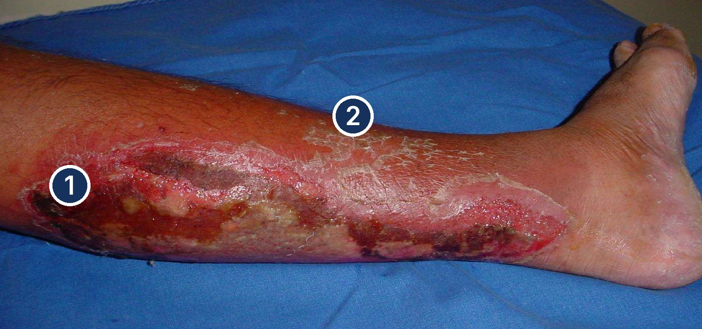
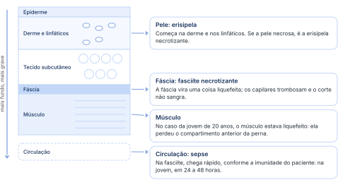
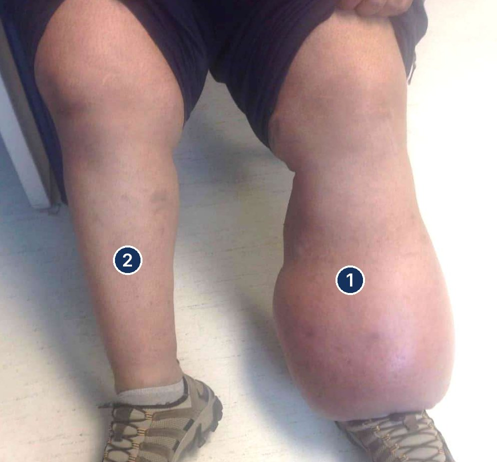
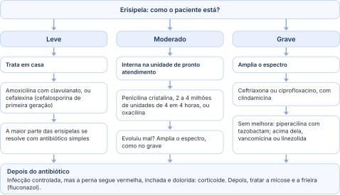

Como reconhecer a erisipela pela perna vermelha e pelo gânglio da virilha, separá-la da tromboflebite, tratar do caso leve ao grave e agir antes que ela vire fasciíte necrotizante.
Material de estudo da aula de 14 de outubro de 2026, segunda aula do dia, depois de linfedema e lipedema. A legenda de cores está na página 2.

O caminho do raciocínio, da perna vermelha à prevenção. O cabeçalho de cada capítulo mostra a etapa em que você está.
Em palavras simples. Infecção de pele parece coisa banal, que qualquer antibiótico resolve. Neste ano, ela mutilou uma jovem saudável e complicou uma cirurgia simples. O motivo principal: germes cada vez mais resistentes.
Fez uma fasciíte pelo estreptococo. Quando abriram a perna, o músculo estava liquefeito; em 24 a 48 horas, estava em sepse. Sobreviveu, mas perdeu toda a musculatura do compartimento anterior da perna e a chance de caminhar normalmente. Segue em fisioterapia.
Sem outra doença importante, fez uma erisipela necrotizante depois de uma cirurgia eletiva, que em tese não deveria complicar. Os antibióticos habituais falharam; com o antibiótico certo, a infecção parou na perna. Ficou com uma mancha escura na pele.
Nos dois casos, foi preciso antibiótico forte: os comuns "não fizeram nem cócegas" numa bactéria que, em tese, é das mais simples, o estreptococo beta-hemolítico do grupo A. Uma moça de 20 anos com fasciíte é o que se espera de um alcoólatra, de um idoso ou de um diabético, não de um jovem.
Mesmo com a exigência de receita, ainda se compra antibiótico sem ela: na falta da receita, o balcão "tem uma guardada na gaveta". É o jeitinho brasileiro; a intenção é ajudar, mas o resultado é um problema muito grave.
“O médico picareta, quando complica, foge do paciente; o médico bom abraça ele e vai até o fim. Como dizem, só não têm complicação os mentirosos e os que não fazem. Sempre que um médico cantar muita lorota para vocês, fujam dele: esse é o perigoso.”
Em palavras simples. São três infecções parecidas, com tratamento parecido; o que muda é o ponto onde a infecção acontece e como ela aparece na pele. Quase todas surgem na perna, porque o pé é a porta de entrada mais comum.
As três são muito parecidas e o tratamento também, com pequenas diferenças. Às vezes, celulite e erisipela são tão semelhantes que só uma análise mais profunda do tecido as separa. Na prática, o que importa é reconhecer que há uma infecção. Nos slides, as linfangites se dividem em três: erisipela, linfangite capilar (a celulite) e linfangite troncular.
“Não sabe diferenciar celulite de erisipela? Às vezes nem eu. O que importa é diferenciar a infecção, porque senão você vai adiar o tratamento, e para esse paciente vai ser ruim.”
Qualquer parte do corpo pode ter erisipela, mas cerca de 90% delas ficam nos membros inferiores. O pé acumula bactérias e fungos e vira a porta de entrada mais comum.
No membro superior, a erisipela é rara: aparece quase sempre na mulher que fez mastectomia, ou em quem passou por cirurgia nas mamas ou por radioterapia.
A linfangite pode surgir no corpo todo, menos na cartilagem, no baço, na esclera e no humor vítreo; 87,4% delas ficam nos membros inferiores.
Antes dos antibióticos, até a Segunda Guerra Mundial, amarrava-se uma fita vermelha na perna com erisipela. Talvez houvesse algum fundamento: a fita poderia segurar a linfa e, com ela, a infecção abaixo do laço. Com a penicilina, a evolução natural desses pacientes mudou.
Em palavras simples. Muita coisa pode inflamar o vaso linfático, mas quem mais causa problema são as bactérias. Na erisipela clássica, o culpado é o estreptococo do grupo A, que parecia inofensivo e hoje exige respeito.
A linfangite pode ser primária, sem causa conhecida, ou secundária a muitos agentes:
É o germe mais envolvido na erisipela: o Streptococcus pyogenes, beta-hemolítico do grupo A de Lancefield. Tem fama de "bactéria devoradora de carne": pode causar fasciíte e liquefazer o músculo, como aconteceu com a jovem de 20 anos. Os antibióticos habituais não fizeram efeito nos dois casos do ano.
Quem causa a erisipela, pelas séries dos slides:
Outras bactérias também causam o problema, e cada uma tem predileção por um tecido:
“Eu não dava muita bola para as infecções bacterianas de pele. Já vi pacientes morrerem, mas sempre tinha um motivo: alcoólatra, desnutrido, renal crônico, hepatopata. Nunca tinha visto pessoas saudáveis com infecções tão graves como vi esse ano. Passei a respeitar um pouco mais.”
Em palavras simples. A erisipela começa como uma gripe: mal-estar, febre, calafrio. A perna só fica vermelha dois a três dias depois. Quem não examina as pernas dá paracetamol, manda para casa e perde o tempo do tratamento.
A incubação é de cerca de 3 dias. As exotoxinas do estreptococo caem na corrente sanguínea e dão os sintomas gerais antes de a pele mudar: febre alta, de 38 a 40 °C, com calafrios; mal-estar, cansaço, perda de apetite, náuseas e vômitos, dor de cabeça; dores nos músculos e nas articulações.
Quase ninguém examina as pernas. Ninguém corta a unha direito, poucos limpam bem atrás do maléolo, quase todo mundo tem frieira, e o médico raramente pede para tirar o sapato e a calça.
Liberar o paciente com infecção sem foco. Se você não achou a fonte da infecção, não libere sem confirmação: examine garganta e pernas e peça para ele voltar no dia seguinte para reexame, ou colha um exame para ver amanhã. Quem sai com "gripe" e volta dois dias depois com erisipela necrotizante já taxou você de erro médico.
Paciente: Estou com mal-estar, febre.
Médico: Alguma coisa na garganta? Tosse? Barriga?
Paciente: Nada disso.
Médico: E nas pernas?
Paciente: Fui picado por um borrachudo, está meio vermelhinho.
Médico: Opa, deixa eu dar uma olhada nisso.
Em palavras simples. Perna vermelha com febre e uma íngua dolorosa na virilha indicam infecção; depois, procure por onde a bactéria entrou. Exames simples confirmam. A grande confusão é com a tromboflebite, que se trata de outro jeito.
O estreptococo inflama os linfáticos e a derme. O quadro pode ficar só como um vermelhão na perna ou subir pelos linfáticos, numa inflamação ascendente que muitas vezes é confundida com tromboflebite. Como em todo processo infeccioso, e na erisipela especialmente, os sinais de infecção são exuberantes.
Ao microscópio, os linfáticos estão dilatados e cheios de exsudato, com neutrófilos e histiócitos. A inflamação atravessa a parede do linfático e chega aos tecidos ao redor, onde pode causar celulite ou pequenos abscessos. Na pele, isso aparece como estrias vermelhas e dolorosas no trajeto dos linfáticos, a linfangite ascendente, e como aumento dos linfonodos que drenam a região.
Além da vermelhidão, o exame mostra linfonodomegalia inguinal: um linfonodo da virilha aumentado e dolorido, o chamado gânglio de Chomel, o linfonodo satélite da infecção. O linfonodo normal da virilha é um carocinho de feijão; o da erisipela é uma azeitona, e dói.
Linfonodo inguinal na infecção linfática importante: palpável e doloroso. Pode ainda não ter crescido no primeiro dia.
Ele só falta quando os linfonodos daquela região foram retirados, como na mulher mastectomizada. Achou o linfonodo? Há chance de haver uma porta de entrada ou uma infecção.
Com a infecção reconhecida, procure por onde a bactéria entrou: frieira, unha danificada, picada de mosquito ou de borrachudo. A porta de entrada é visível em 55 a 82% dos casos.
De todos os diagnósticos diferenciais, o mais importante é a tromboflebite. Vista de longe, uma linfangite ascendente pode ser igualzinha a ela; o que separa as duas é a palpação e a virilha.
O mesmo tratamento para as duas. O erro mais comum de quem não conhece: antibiótico e heparina para a tromboflebite, antibiótico e heparina para a erisipela. A tromboflebite pede anticoagulante; a erisipela, antibiótico.
Nos slides, o diagnóstico diferencial também separa as duas tromboses venosas e inclui outras infecções:
Na maioria das vezes, o diagnóstico é clínico, pela história e pelo exame físico. Os exames pedidos são poucos:
Em palavras simples. A maioria melhora com um antibiótico simples. Se ele não acerta logo, a infecção desce pelas camadas: necrosa a pele, chega à fáscia e cai na circulação. Quem escapa pode ficar com a perna inchada e com erisipelas que voltam.
A maior parte das erisipelas se resolve com um antibiótico nem sempre muito potente, como uma cefalosporina de primeira geração. Raramente evolui para uma complicação grave, mas a chance não é pequena: cerca de 4% ficam com sequela, como a mancha escura da paciente operada ou a perda muscular da jovem.
Pelo slide de evolução, 97,1% se recuperam total ou parcialmente, e 2,9% morreram de sepse não controlada. Nos quadros graves aparecem flictenas, necrose, fasciíte, gangrena e sepse.
Sem o antibiótico certo desde o início, a erisipela necrosa a pele: é a erisipela necrotizante. Se a infecção se aprofunda e chega à fáscia, vira fasciíte necrotizante. A diferença é o plano: uma é mais superficial, a outra, mais profunda.

Imagem dos slides da aula.
A infecção danifica os capilares, que inflamam e trombosam. Sem circulação, o tecido vira comida para a bactéria, e não se consegue combater a infecção. Por isso a pele apodrece, a fáscia se liquefaz e, ao corte, não sai sangue.
Conforme a imunidade do paciente, a fasciíte necrotizante evolui para sepse muito rápido: na jovem de 20 anos, em 24, talvez 48 horas. Na paciente operada, a troca para o antibiótico certo, assim que ela começou a piorar, fez a infecção parar na perna.
“Paciente que tem fasciíte necrotizante evolui para sepse muito rápido: se você dormir no ponto, você perde o paciente. Então, erisipela é uma coisa séria. Sempre, sempre, sempre, especialmente nos pacientes que têm algum tipo de imunodepressão, você tem que ser mais agressivo.”

Quanto mais fundo o plano atingido, mais grave o quadro.
Veio de outra cidade com pedido de vaga de terapia intensiva. O intensivista suspeitou de oclusão arterial na perna, mas havia pulso pedioso: era fasciíte. Na cirurgia, o bisturi não fez sangrar e a fáscia estava liquefeita. Foi amputado e morreu duas horas depois. Provavelmente, ninguém tinha examinado a perna.
A picada da jararaca inocula muitas bactérias Gram-negativas. Ao abrir, vaza um material liquefeito. A conduta é abrir, dar antibiótico de largo espectro e debridar tudo. Depois de controlar a infecção, pode-se usar a câmara hiperbárica, conforme o germe (Gram-negativo, anaeróbio).
Internou com uma mancha roxa na coxa e recebeu antibiótico; no dia seguinte, já precisava de cirurgia. No debridamento extenso, o campo não ficou vermelho: não havia sangue, estava tudo apodrecido. Talvez uma desarticulação mudasse o desfecho, mas naquele estágio a infecção já fugia do controle. Morreu pouco tempo depois.
Ulceração; gangrena e sepse; amputação e óbito.
Lipodermatosclerose e linfedema.
Quem escapa da fasciíte e da sepse pode evoluir, a longo prazo, para linfedema. A erisipela de repetição deixa dano linfático permanente e a perna inchada; e, cada vez que a pessoa se expõe, uma nova erisipela acontece.

Imagem dos slides da aula.
A erisipela volta, no mesmo local ou em outro membro, em até 10% dos pacientes em 6 meses e em 30% ao longo de 3 anos. Os dois principais fatores de risco para a volta são o edema do membro e a ruptura da barreira da pele, por micose ou trauma. O risco também sobe com linfedema, insuficiência venosa crônica e porta de entrada sem tratamento (micose, úlcera, trauma).
Em palavras simples. A penicilina ainda é a base. O caso leve trata em casa; o moderado interna; o grave pede antibiótico de espectro mais largo, e a fasciíte, cirurgia de urgência. Controlada a infecção, entram o corticoide para a inflamação que sobra e o remédio da micose.
As penicilinas ainda são o carro-chefe na erisipela não complicada. O paciente "não está tão mal assim"? Pode tratar em casa. Está pior? Interna na unidade de pronto atendimento e começa a penicilina.
“Eu posso tratar em casa, se o caso é leve; internar e dar um antibiótico inicial, se o caso é moderado; e, para os casos graves, geralmente a gente vai precisar ampliar o espectro.”
Paciente internado, na erisipela não complicada.
Os pacientes graves mais recentes seguiram caminhos parecidos até o mesmo fim. Um começou com oxacilina, piorou, passou para ceftriaxona com clindamicina e, sem melhora, para piperacilina com tazobactam. Outro começou com ciprofloxacino e clindamicina e só respondeu à piperacilina com tazobactam. Nas infecções graves, ela tem sido a opção; acima dela sobram a vancomicina e antibióticos mais recentes, como a linezolida.

Com o tratamento, o quadro geral (febre, mal-estar) regride em 2 a 3 dias, e a vermelhidão e o inchaço diminuem aos poucos. Em 10 a 15 dias, a pele fica um pouco mais escura e descama. Quando há internação, ela dura, em média, de 7 a 12 dias.
Corticoide sozinho com a infecção ainda ativa. Se há dúvida de que a infecção está controlada, não use só o corticoide tópico: há pomadas que associam um antibiótico tópico ao corticoide.
Depois de uma erisipela necrotizante tratada, com a necrose já debridada, a perna ainda fica vermelha e inchada: é ali que o corticoide entra.
Em palavras simples. Quem já teve erisipela ou tem doença linfática vive com a porta aberta: unha danificada, frieira, picada de borrachudo. Cuidar dos pés e dos sapatos evita a próxima infecção; em quem tem erisipela de repetição, o antibiótico também pode prevenir.
Quase todo mundo tem uma, se olhar os pés: unha danificada, picada de borrachudo, frieira. Uma pescaria de fim de tarde é um bom exemplo. Para quem tem disfunção linfática, cada uma é um risco.
Para a micose das unhas e a frieira.
Tênis a semana toda, com pouco sol, faz os fungos proliferarem à vontade. O certo é deixar os calçados tomarem sol pelo menos uma vez por semana; também ajudam um spray desinfetante (como o Lysoform) ou vinagre passado dentro do calçado.
“Precisa de lâmpada ultravioleta no sapato? Para uma pessoa normal, não: sol e vinagre são suficientes. Mas, se você tem uma sequela e tem uma tendência, você tem que ser muito, muito cuidadoso com as portas de entrada.”
Complexo B contra borrachudo: uma regra leiga diz que a vitamina do complexo B, eliminada no suor, deixa um cheiro de que os mosquitos não gostam. Não se sabe se procede; o repelente, sim. Lâmpada ultravioleta: uma lâmpada esterilizadora, ligada por uma hora com o ar desumidificando, controlou o mofo do estúdio do professor; funciona também para o sapato.
Costuma ser o mesmo perfil: obeso, displicente, não usa meia e gosta de viajar para lugares com muito borrachudo.
Quando os fatores predisponentes persistem, a volta da erisipela pode ser prevenida com antibiótico, por 6 meses, pelo esquema dos slides:
Penicilina benzatina no músculo, de 21 em 21 dias. Eritromicina por via oral, de 12 em 12 horas, por 10 dias.
Cerca de 90% das erisipelas estão nos membros inferiores: o pé é a porta de entrada. No braço, quase só depois de mastectomia.
Erisipela clássica: estreptococo beta-hemolítico do grupo A, a "bactéria devoradora de carne".
Começa como gripe; a perna fica vermelha 2 a 3 dias depois. Febre sem foco: examine as pernas e não libere sem confirmação.
Gânglio de Chomel: linfonodo inguinal de 2 a 3 cm, doloroso, uma azeitona na virilha.
Tromboflebite: febre baixa ou ausente, cordão duro e sensível, sem linfonodo; trata-se com anticoagulante. Erisipela, com antibiótico. Não dê o mesmo tratamento para as duas.
Necrose da pele é erisipela necrotizante; chegou à fáscia, é fasciíte necrotizante. A diferença é o plano.
Fasciíte necrotizante vira sepse em horas (24 a 48 na jovem): seja mais agressivo, sobretudo no imunodeprimido.
Leve: casa, com amoxicilina com clavulanato ou cefalexina. Moderado: internar, com penicilina cristalina ou oxacilina. Grave: ampliar o espectro, até piperacilina com tazobactam.
Corticoide só com a infecção controlada; na dúvida, pomada de antibiótico com corticoide. Depois, fluconazol para a micose.